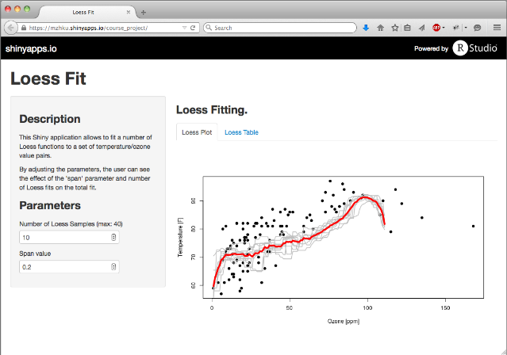

Slidify Presentation of the Loess Fitting App
Martin Hediger, PhD
Martin Hediger, PhD
The weighting function is given by
\[ w(x) = (1- \left|x\right|^3)^3 I\left[\left|x\right| < 1\right]\]
where \(I\) is the indicator function.
The application allows to see how span_value affects the fit.
library(ElemStatLearn); data(ozone)
ozone <- ozone[order(ozone$ozone), ]
span_value=0.2; n_pred = 20
sample_set <- sample(1:n_pred, replace=TRUE)
ozone_sampled <- ozone[sample_set, ]
ozone_sampled_ordered <- ozone_sampled[order(ozone_sampled$ozone), ]
loess(temperature ~Â ozone, data=ozone_sampled_ordered,
span=span_value, na.action=na.omit)
## Call:
## loess(formula = temperature ~ ozone, data = ozone_sampled_ordered,
## na.action = na.omit, span = span_value)
##
## Number of Observations: 20
## Equivalent Number of Parameters: NaN
## Residual Standard Error: NaN
Application 
Thanks for having a look at my application and my presentation.